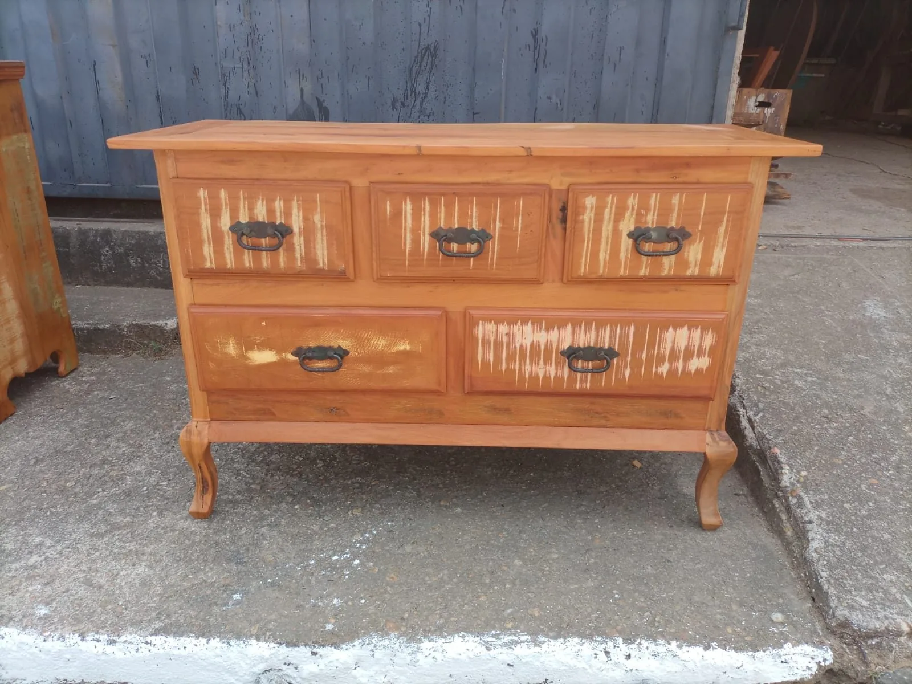
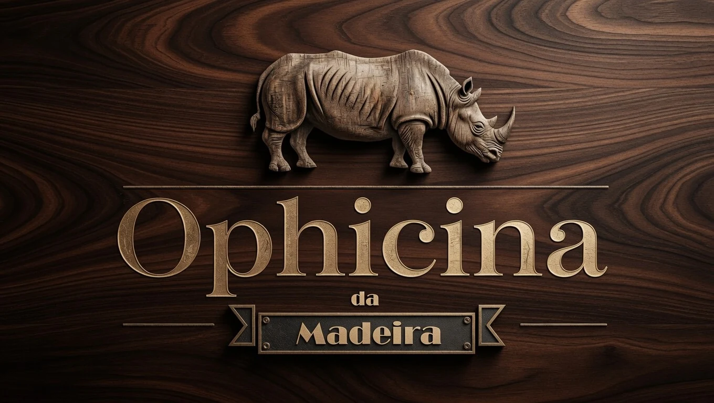
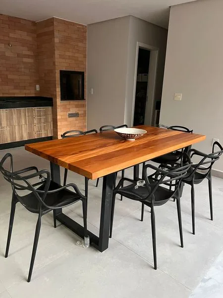
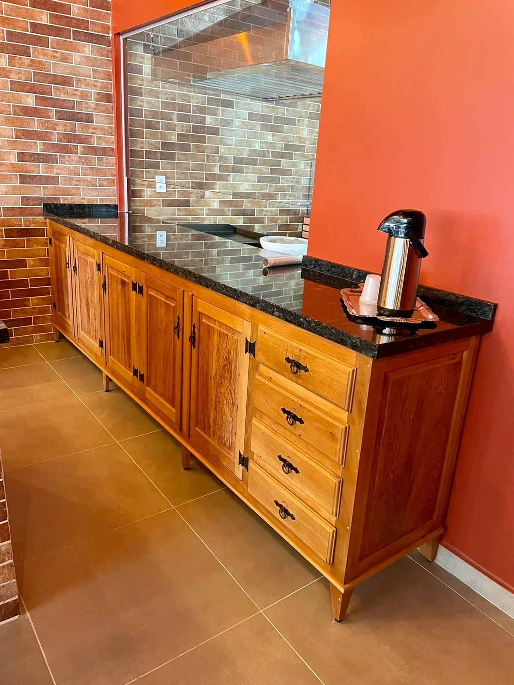
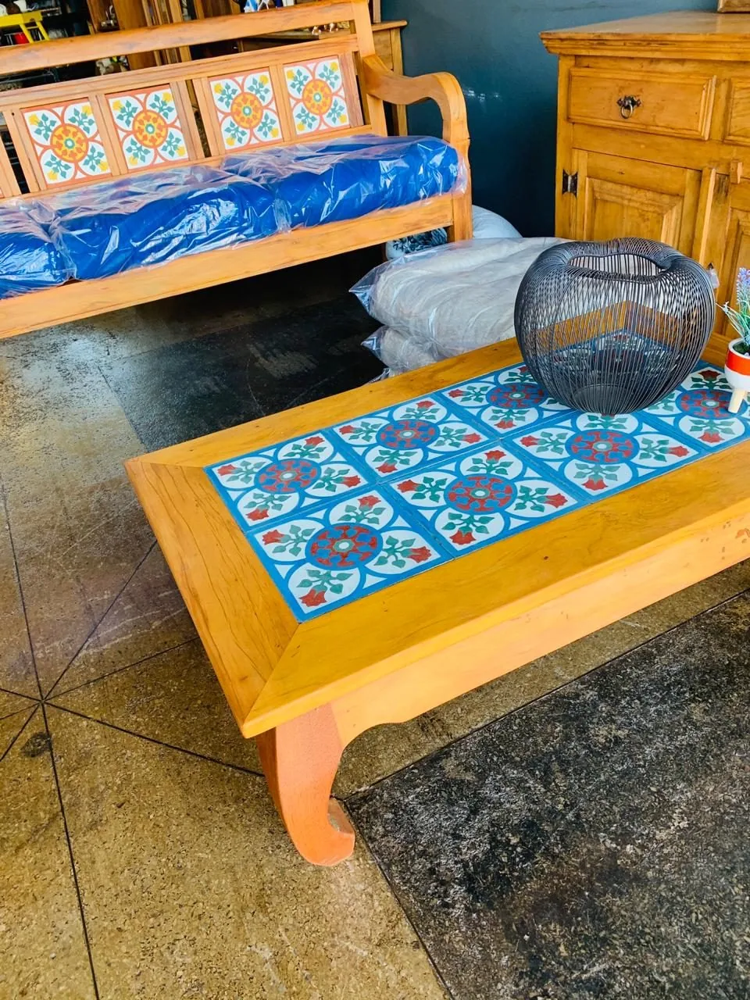
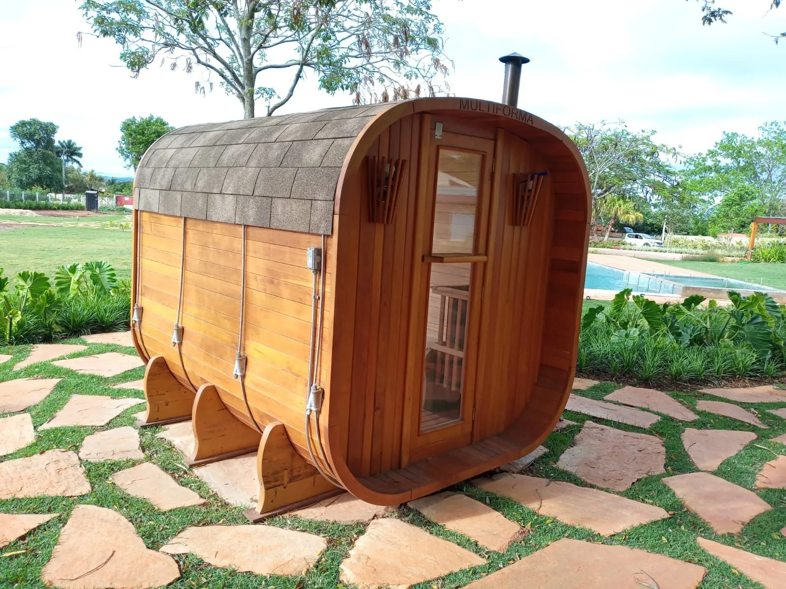
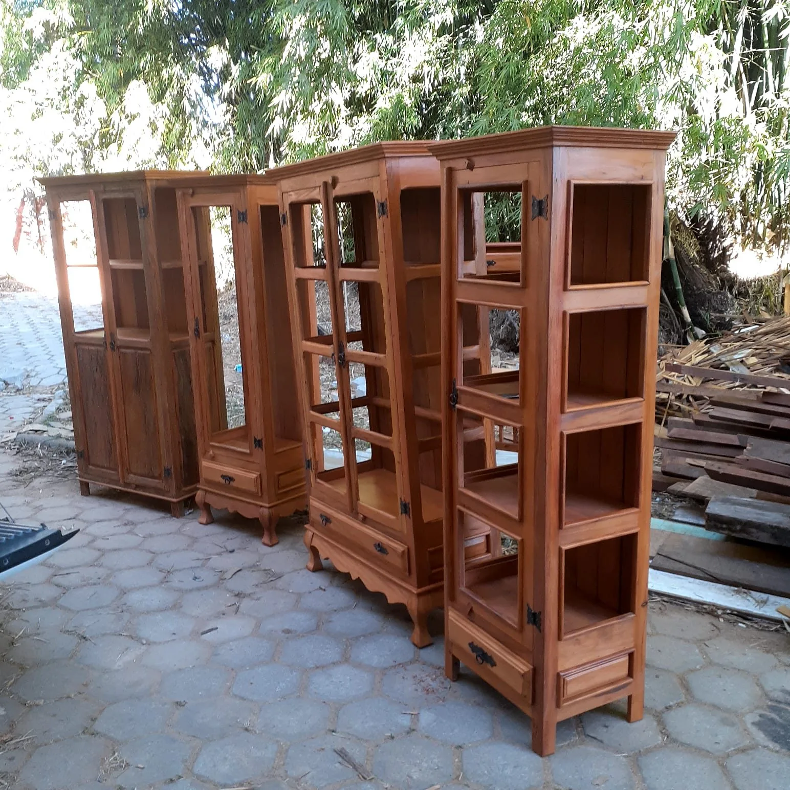
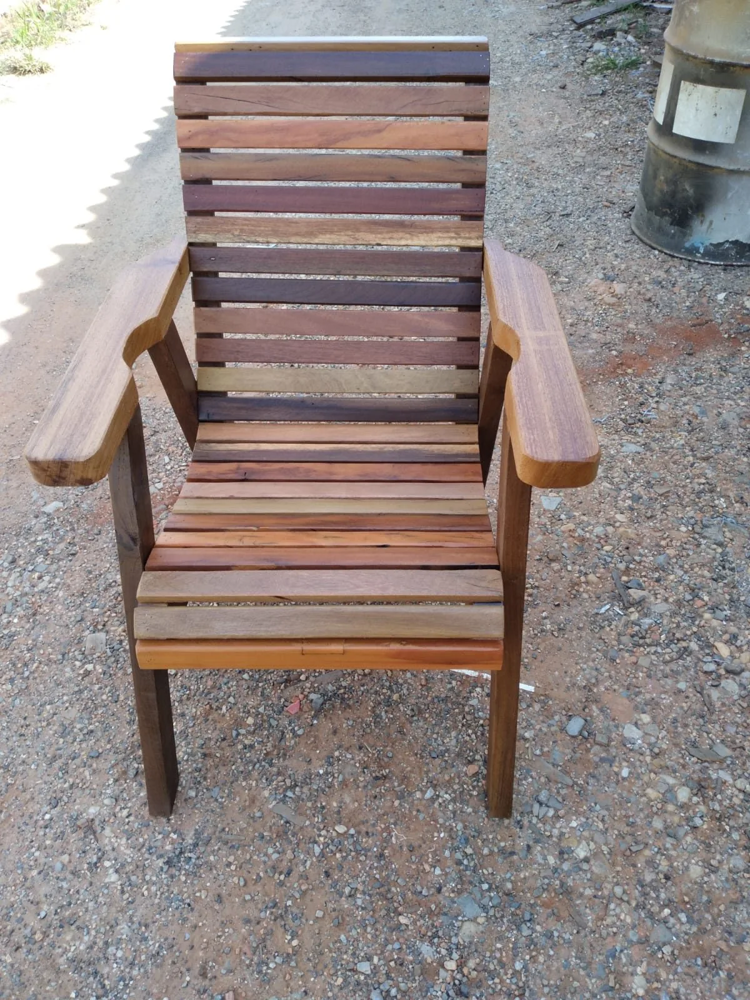

Móveis residenciais
Mesas, cadeiras, bancos, cômodas, racks, camas, cristaleiras e estantes — móveis pensados para o conforto da sua casa, com o calor da madeira maciça.

Há mais de uma década em Boituva-SP transformando madeira de demolição em móveis rústicos, balcões e estruturas sob medida — para sua casa ou para o seu ponto comercial.
A Ophicina da Madeira nasceu da paixão pela madeira de demolição — peroba, ipê, jatobá e cumaru retirados de antigas construções, com mais de cinquenta anos de história. Cada tábua carrega marcas, nós e o tempo: matéria-prima rica e impossível de ser reproduzida em fábrica.
Trabalhamos peça a peça, com cuidado artesanal. Atendemos famílias que querem um móvel para a vida toda e empreendedores que querem um espaço comercial com personalidade — bares, restaurantes, pousadas, lojas e salões.
Estamos em Boituva-SP e entregamos na região. Combine uma visita à oficina ou peça um orçamento direto pelo WhatsApp.

Cada peça é desenhada e produzida especialmente para o seu espaço. Veja algumas das frentes em que atuamos.

Mesas, cadeiras, bancos, cômodas, racks, camas, cristaleiras e estantes — móveis pensados para o conforto da sua casa, com o calor da madeira maciça.

Balcões, bancadas, prateleiras, mesas e cadeiras para bares, restaurantes, cafés, pousadas e lojas. Ambientes acolhedores que fixam a marca do seu negócio.

Tem uma ideia diferente? Desenhamos e produzimos peças exclusivas, do esboço à entrega. Trabalhamos com encaixes tradicionais e ferragens em ferro forjado.

Pergolados, decks, saunas, casinhas e revestimentos em madeira de demolição — soluções para áreas externas com beleza natural e durabilidade real.

Algumas peças já saem direto da oficina. Cristaleiras, mesinhas, banquetas e armários: passe na nossa loja em Boituva-SP e leve no mesmo dia.

Móveis antigos da família que pedem nova vida? Recuperamos peças com técnicas tradicionais, mantendo a originalidade e ganhando décadas de uso.
Estas são apenas algumas peças. Veja todas na nossa galeria completa.
Atendemos pelo WhatsApp todos os dias. Mande uma foto do espaço, uma referência ou apenas a medida — a gente te orienta.
(15) 99241-8743{kind=link}
{kind=link}
{kind=link}
{kind=link}
{kind=link}
{kind=link}